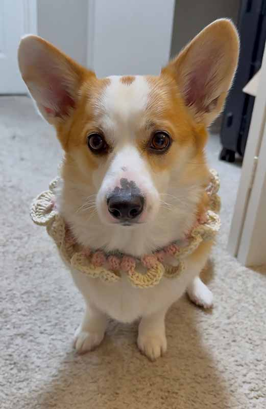
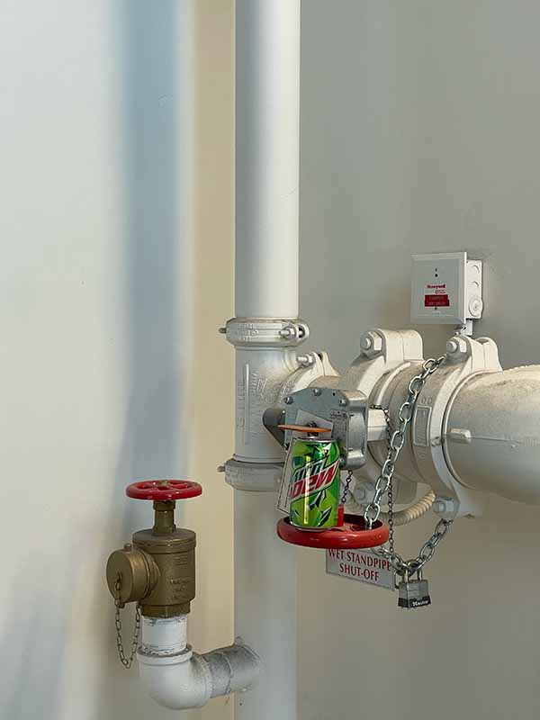

I chose to read the article about game design UX (see here)and how it is used to monetize users and keep them coming back for more. This article was definitely a bit disturbing as it shows how thoroughly game designers consider taking advantage of their users. Upon just starting to read the article the author revealed that it is easier for users to reach certain parts of the screen. I assumed those would be used for helpful things in the game, but that is often where ads or the store is placed, to make it easy for users to spend money. Later on the author discusses how different elements of a store can make it more likely the user spends money, such as the timing, the colors, the sizing, animation, and more. Overall this article was interesting and potentially helpful for my own UI/UX work, but I also wonder if we need to have games and apps that are always looking to take advantage of their users.
Journal 4 -
VISUAL THINKING ANALYSIS
Part One
Joanne’s image is about her crochet project as modeled by her dog. I find that this image is interesting because the cuteness of the dog draws in the viewer's eye to discover Joanne’s artistic work. She talks about using language to document her creative process in crocheting. Therefore, I would say that the dog is the more obvious part of this image while the crochet is a little bit more mysterious.
I would suggest using a zoom effect to highlight her work, and emphasize detail in her crochet. This could be accompanied by text that would say what stitch it is, or how long the project took. If she wanted to push it further she could attach multiple images of the project in different angles.

Joanne, 2025
Part Two
This image is interesting because of the juxtaposition of a junk food item in an industrial setting. The unopened can of Mt Dew is sitting on pipes in a stairwell landing of the third floor of a building on campus. The way it balances on the red wheel and how the colors of the green and red pop out, yet match with the pipes catches my eye. This relates to my topic of “Forgotten” because the can is not somewhere it is supposed to be, it was left by someone in a rush. It makes me wonder how long it has been there, how much longer it will sit there, and if its previous owner remembers it.
This collection tells a story about the contrast between movement and stillness, that in the bustle of life we can stand still for a moment and notice what sits forgotten. These items say that someone was here, but moved away in the flow of life. I personally enjoy the art of noticing, as you can find beauty and amusement in things hiding in plain sight.
I think I could potentially play with cropping if I want to change any framing to emphasize something about an image. I could also play with filters so that my images form more of a unified body as a whole.

Emmeline Thomsen, 2024
Journal 3 -
VISUAL THINKING STRATEGIES RESEARCH
Reading the New York Times article “10 Intriguing Photographs to Teach Close Reading and Visual Thinking Skills” was interesting to think about the power of images and the importance of slowing down to truly notice details and obtain meaning. Much of our lives are busy and everything for me is often go-go-go, so split second glances and skimming of content is often a reality for myself and many others.
The article explains how critical thinking skills can be developed from engaging in looking at images and noticing what is going on. Once someone does this, the images can be very impactful. This is important to think about in my design because I need to use images in a way that can catch someone's eye as they scroll quickly through, and then provide substantial meaning once they spend time with the image.
As I scrolled through the Awwwards site, this website caught my eye. The images were simple but rich in colors and gave a feeling of quality, history, and home that the words on the website further explain. The images were well balanced with text, and had animated interactions if you could click on them to move to a different place in the website. Overall the use of images was very strong as background and main content.
Journal 2 -
OVERLAYS DESIGN PATTERN RESEARCH
The article on “Best Practices for Modals, Overlays, and Dialog Windows” (see here) was engaging and explained a lot of things I have seen utilized in websites and UI work, but hadn’t really thought about the why behind it. I know it is important to learn about this because it will better inform my thinking when I design things, and help me be a better designer.
All of the elements of modals work together to make them work well (the escape, the lightbox effect, the labels, buttons, and prompts). One thing that stuck out to me was that it is best to make the user initiate the modal or else they may quickly dismiss it. I have found that this is true for me, and it is a habit to assume the webpage is blocking what I want to do for an unnecessary reason, so I clear it out without thought.
Overall, I enjoyed this article and will most likely refer to it as a checklist when creating modals in the future.
Journal 1 -
RESEARCH FORM DESIGN
Forms are a common part of many websites, applications, online shopping, and more. A designer must keep important considerations in mind when creating a form as many people who spend time online have experienced both good and bad forms.
I think that if the designer wants the user to have an enjoyable experience and provide the funds or feedback the form requests, they must feel inclined and comfortable doing so. This article does a great job explaining some tools designers can implement to ensure better usability. One thing that stuck out to me was their advice to not use inline labels. While it might look more subtle, I have had the experience of forgetting what the prompt was and needing to redo my work. Furthermore, letting the user see the process helps them stay engaged instead of feeling like there is no end in sight on the form. I am curious what strategies we can use to make the webpage show this.
One website I have interacted with that I think has good usability and form strategies is the CalFresh application page. It gives icons, shows progress, explains mistakes, shows what the user selects in multiple choice options, as well as providing easiest questions first.